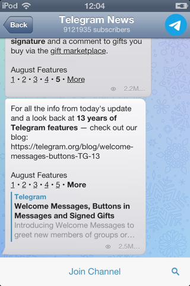
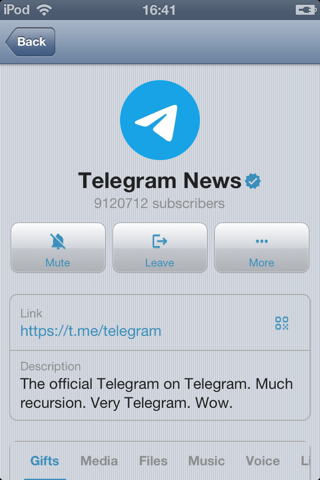
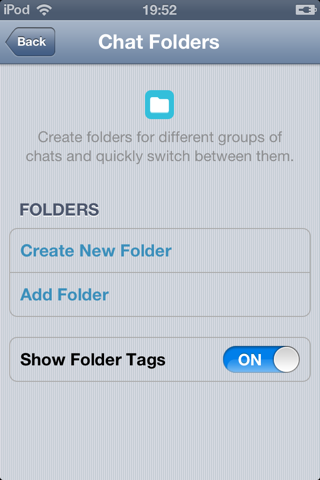

LegacyTG
LegacyTG: Telegram for iOS 6.0-12.5.7 on old iPhones and iPads.
Add https://bla1r1.github.io/LegacyTG as a Cydia source, then install LegacyTG from the
LegacyTG repository.
https://bla1r1.github.io/LegacyTG
Screenshots
 |
 |
 |
Changelog
2.0 (6) - 2026-11-24
- The local Telegram database is now encrypted. On the first launch of 2.0 an existing database is re-encrypted with a key kept in the keychain; chats, media and the login stay. After that, 1.5 and older cannot open it: going back to an older version means signing in again and downloading the chats anew.
- App files are protected until the phone is first unlocked after a restart. Until that first unlock the app waits instead of opening the database.
- Video calls: one-to-one video calls with the official Telegram apps over the 9.0.0 protocol. H.264 through the phone's hardware encoder and decoder on every iOS from 6 (VideoToolbox, which iOS 6 and 7 do not expose publicly), VP8 when the other side has no H.264, the camera can be turned off mid-call. Checked between an iPod touch 4 on iOS 6.1.6 and the official iOS app, both ways.
- Clear sound on old phones: the crackle and the 400 ms delay on the iPod touch 4 came from encoding on the audio thread, which skipped 60% of its cycles. Encoding and decoding now run on their own threads; audio goes in 60 ms Opus packets with forward error correction sized from the loss the other side reports, and a playout buffer stretches speech over gaps instead of clicking.
- Steadier video: lost packets are asked for again with a wait matched to the round trip, keyframes are requested again when they do not arrive, the send rate follows measured loss, the other side is asked for less when the phone falls behind, and frames are decoded in the camera's own colour range (55-85 ms per frame were spent converting).
- Peer-to-peer calls: when both sides' privacy settings allow it, the call goes straight between the two devices (on the same Wi-Fi it connected directly within a second), and returns to Telegram's relay within 3 s if the direct path goes quiet.
- Network changes: switching between Wi-Fi and mobile data or losing the network for 3-20 s no longer ends the call; the screen says "Connecting..." meanwhile.
- Ringing: incoming calls ring with the bundled ringtone and vibrate, respecting the mute switch; outgoing calls play a ringback once the other phone rings.
- Calls in the background: with the app behind another one, an incoming call arrives as a notification with the ring, and opening it brings up the call screen.
- Interruptions and audio routes: a phone call, an alarm or Siri pauses the call and it resumes afterwards; headphones and Bluetooth take the sound and give it back to the speaker when they leave; the proximity sensor darkens the screen at the ear.
- Fixed: every second call within one launch never started; versions 3.0.0 and 2.4.4 were offered to the other side without being implemented.
- Secret chats work: start one from a profile with the official confirmation, see the official panel ("You have invited ... to join a secret chat" and what secret chats do) while it is empty, a green padlock and green name in the chat list, the padlock beside the name in the chat, the encryption key picture to compare, the self-destruct timer, and on iOS 7+ the "took a screenshot" notice to the other side.
- Fixed: starting a secret chat showed "An error occurred." even when it worked, and its profile opened without the person.
- As in every Telegram app, a secret chat exists only on the device it was started or accepted on.
- Create polls and quizzes: Attach > Poll opens the official New Poll screen with a question and description, up to 12 options that appear as you type, Show Who Voted, Allow Multiple Answers, Allow Adding Options, Allow Revoting, Shuffle Options, and Set Correct Answer with an explanation. Cancel asks before discarding a filled poll.
- iOS 7: emoji are drawn from the bundled Apple Color Emoji pictures directly, in messages, names, chat previews and the emoji panel, every sequence up to Unicode 15.1 including flags, keycaps, skin tones and families. iOS 7 could not draw the bundled font under load: the app closed or froze for half a minute when the phone was turned with the emoji panel open.
- The right-facing people emoji of Unicode 15.1 no longer crash older iOS, and the font no longer carries picture metadata that iOS 7 misread.
- The emoji panel draws each emoji once and keeps the picture, so scrolling and turning the phone stay light on every device; the category strip shows the new emoji as well.
- Custom emoji: more of them animate in one message on stronger phones: 3 on iPhone 3GS/4 and iPod touch 4, 5 on iPhone 4S/5, 10 on iPhone 5s/6, 20 on newer; the rest show their still picture.
- Fixed: custom emoji overlapping in a row, country flags drawn as two letters, emoji cut at the bottom, bubbles too narrow for their emoji.
- Master-detail split view: the chat list beside the open chat, with the iOS 6 bar gloss and tab bar chrome, a doodle wallpaper behind an empty chat, and the open chat kept selected in the list.
- Every list screen follows one layout: the same empty states, add rows and sections across Settings, chats, contacts, groups, Business and Stars. Along the way: the Topics menu under its button, archive and Saved Messages rows, the notifications footer, the theme carousel, language search, Edit Profile, the Your Color header, login headings, the recent calls row, the call info button, wallpaper checkmarks, the AI compose bar, code entry boxes.
- The message field stays above the keyboard and the emoji panel through rotation and on iOS 7.
- The tab bar follows an emoji chat theme used for the whole app.
- Switch rows with a description no longer overlap the row below on iOS 6.
- Chat list: search and the archive row stay hidden above the list at launch; Saved Messages no longer shows an online dot; empty Stories and Archive panes in a profile are centred.
- Captions widen their bubbles, the composer footer no longer overlaps the text, and swipe actions in the chat list take taps.
- The sticker panel scrolls without end again and opens the right pack from the strip.
- Phone numbers typed without + or 00 stay national (Kyrgyz 996... is no longer taken for a country code); a pasted international number is split correctly.
- Log Out returns to the login screen.
- Country flags show in the country list on iOS 6.
- The sessions list on your other devices shows this app's real version.
- A background keep-alive keeps Telegram connected behind other apps and shows new messages as notifications.
- Leaving the app pauses animated stickers, video stickers and GIFs, sets you offline and defers list reloads.
- Smaller caches and memory-warning cleanup on 256 MB devices, so the system closes the app less often.
- Stickers, animated emoji, wallpapers, video and voice messages from other people are checked for size and structure before they are decoded, so a crafted file cannot exhaust memory or crash the app.
- The Telegram datacenter is read reliably from the session file for diagnostics.
- A smaller download: emoji pictures at 32 px, stripped binaries and JPEG artwork.
- Installing from Cydia or Zebra asks to restart SpringBoard so the icon appears at once, and the package is built in the format older dpkg expects.
1.5 (5) - 2026-11-19
- Apple Color Emoji: cartoon OpenMoji replaced with native 32-bit TrueColor Apple Color Emoji font (
AppleColorEmojiCompat.ttf) extracted from macOS, with 40/64 ppem strikes covering Unicode 15.1 and 249 country flag ligatures. Glyphs render in full fidelity with smooth Apple gradients and calibrated gamma without blown highlights or quantization dithering.
- Animated stickers (.tgs): rendered via
tlottie (no_std Rust engine compiled for armv7 iOS 6 softfp), with TGLottieRender C++ fallback and TGCrashGuard signal isolation to prevent malformed animation files from crashing the process.
- Chat performance: chats open instantly on the last-viewed page (
TGChatPageCache) without blank screen flashes. Message bubbles are recycled through TGChatCellPool and drawn off the main thread via TGTextRender LRU cache, bringing smooth 60 fps scrolling on iPod touch 4 and iPhone 4S.
- Panel performance: instant loading and smooth scrolling across stickers, custom emoji and GIFs. Sticker shelves are cached on disk and in memory (
TGBitmapFile, TGJSONCache), GIF minithumbnails stay in memory to avoid main-thread JPEG decode stalls, and grid clearing on tab switch is eliminated.
- TDLib 1.8.70: updated to TDLib 1.8.70 and compiled with size optimization (
-Oz), shrinking the __TEXT segment by ~2 MB for a significantly lower RAM footprint on 256–512 MB devices.
- Telegram Stars & Giveaways: stars subscriptions, giveaways results with prize codes and participating channels, and unique gift releasing channels ("released by @channel").
- Profile enhancements: Star rating level badge and details sheet, video avatars looping in headers on Modern and Full tiers, and sticker profile pictures played over the background fill.
- Link previews & rich chat items: official action buttons under link previews (SEND MESSAGE, VIEW CHANNEL, VIEW THEME, etc.), Saved Messages reactions displayed as tag chips, big emoji pre-sized before sticker arrival, external album covers for tracks without artwork, and animated slot machine dice reels and lever.
- Secret media, polls and 18+ veil: self-destructing secret chat media with one-time view, open poll "Add an Option" support up to 100 characters, service line shortcuts leading directly to referenced polls/checklists/games, and 18+ sensitive media under official veil and confirmation alert.
- Stories and navigation: tappable links and message areas in stories with official hit testing and menus, deep-linking into specific Settings sub-pages (
tg://settings/blocked, passcode, storage, etc.), and Instant View folding details, anchors and button rows.
- Recent Actions: channel name and profile colour changes are displayed with official text, colour dots and emoji swatches.
- Telemetry & stability: crash markers (
OOM@Screen) recorded and reported on next launch, install distribution channel tracking (src=ipa vs src=deb), and active Telegram datacenter (DC 1–5) resolved directly from session binlogs.
- Cydia repository tooling:
update_repo.py orders debs by control file Version rather than file timestamp, preventing old packages from overriding fresh builds.
1.4 (4) - 2026-11-16
- Sign-in works again. 1.3 was built with placeholder API keys, so Telegram refused every new sign-in, and the screen kept loading because the error was never shown. Errors from Telegram are shown again on every sign-in step.
- A fresh install opens on the phone number instead of an empty "Chats / Loading..." list, and Log Out waits on a spinner rather than an empty chat list.
- The phone step names your country and its code before you sign in. Country opens Telegram's full list: A to Z with an index and search by name or code.
- Log in by QR Code is back under the phone number.
- The keyboard closes when you tap empty space or drag the screen, on iOS 6 too, where the number pad had no way to close.
- Recent Actions for supergroup and channel admins: the last 48 hours of service actions in Telegram's own words.
- The passcode and the database key are kept on jailbroken installs: the 1.3 package had lost its keychain permission.
- More of what Telegram sends is shown: when someone was last online, story rings, chat list notices, the full hold menu, SMS word codes, call status and rating, extra usernames, the join request bar, slow mode, jumps to unread reactions and poll votes, why a message failed to send, link preview pictures, commenters' photos, auto-delete timers, quotes, bot commands, business hours and the public photo.
- The API keys are no longer readable as plain text in the app.
1.3 (3) - 2026-11-14
- iOS 6: the dark theme no longer closes the app at launch. It set a section-index background colour and a bar tint that only exist from iOS 7; both are checked now.
- One download for every device:
LegacyTG.ipa carries the 32-bit (armv7) and 64-bit (arm64) app in one package, and the Cydia repository installs the same build.
- A message that failed to send is marked in the chat and in the chat list; one tap sends it again.
- Send files and music: the document picker on iOS 8 and later, songs from the music library on every version, plus silent and repeating scheduled messages. Music plays while it is still downloading.
- The chat list shows what a message is (photo, voice, sticker) with its thumbnail, who is typing in a group, reaction, poll and folder badges, and counts as 99+.
- Profile photos open full screen and swipe through every photo a person has; before, the gallery always said "No Photos".
- Fixes for iOS 6: the sign-in code screen, the terms screen, sending music and the profile music strip no longer close the app; the passcode is stored again on jailbroken installs.
- Switching accounts no longer shows the other account's themes, wallpapers or media; screens stop listening for updates when they close.
- Custom emoji: every emoji in a message is drawn (five identical ones were drawn once), and one the renderer cannot animate keeps its picture instead of a blank.
- Dates, file sizes and durations read the same everywhere: in the app's language, with the pack's units, and an hour-long track as 1:00:00.
- Search looks like iOS 6: the field and Cancel sit on the navigation bar, scopes are a bar segmented control, and "No Results" is said once.
- Chat Folders opens with the official explanation; Recent Calls shows photos and the official empty text; privacy pages use Telegram's own help text, so they translate.
- Reordering chat folders moves the folder you drag.
- Gift pages keep the navigation bar and show the Star for a gift of Stars.
- Decoded pictures stay under 16 MB on 32-bit devices (32 MB on 64-bit), and the chat applies new messages in batches every 100 ms.
1.2 (2) - 2026-11-09
- Official Telegram themes: light and dark, chat themes with their paired wallpapers, patterns, Night Blue and scheduled Auto-Night.
- The composer grows with the text; Return starts a new line. The AI screen can translate, restyle or fix a message before you send it.
- Faster launch: the first screen appears in about a second instead of three to five, with custom emoji already drawn in the chat list.
- The app checks for updates through our bot once a day and shows the official update screen with the changelog.
- A "Share Statistics" switch in Privacy and Security. It sends the app version, iOS, device, tier, jailbreak flag and language; never the account id.
- The blocked list shows real blocked accounts with their avatars; deleted accounts are left out.
- An empty Downloads screen now says that files downloaded in chats will appear there.
1.1 (1) - 2026-11-08
- Telegram for iOS 6 to 12.5: phone, code, password and QR sign-in, three accounts, and a Telegram-shaped Settings.
- Chats, groups, channels and forums with replies, forwards, edits, pins, reactions, folders, archive, scheduled messages and secret chats.
- Photos, videos, GIFs, documents, voice messages, round video, stickers and custom emoji, with downloads and saving to the camera roll.
- Stories, profiles, contacts, 1:1 calls, notifications, privacy controls, passcode lock and two-step verification.
- Search in a chat and across the app, with text from the official Telegram language packs.
- Release builds for 32-bit and 64-bit devices, with checksums for every download.